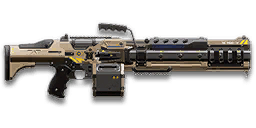

← Back to the MGR-L1 Promise comparison
Sage Guide · New Conglomerate · Heavy Assault
A 1,000-cert NC LMG with a 100-round magazine and a trick no other starter gun has: the longer you hold the trigger, the steadier it gets. This page teaches you to use that trick — and to survive the long reload that pays for it.
The one-line verdict: a close-to-mid-range LMG that rewards patient bursts. Its first shot kicks hardest, then the recoil shrinks with every shot until, by shot four or five, it is the steadiest LMG in the game. Fight between 10 and 40 metres, burst 5–8, and it will carry you.

The MGR-L1 Promise · Modular Gauss Rifle · 100-round box magazine
Picture the scene, because you've probably lived it: you're sprinting across a courtyard, an enemy appears, and you do everything at once — hold the trigger down while you're still running, then press aim-down-sights (ADS) a split-second later, finger still down. The sight picture snaps in, it looks precise… and your bullets spray everywhere except the man in your crosshair. He kills you. It feels like the game cheated. It didn't — here's what actually happened.
You sprint in with the cone already at its widest — 7.0° — before a single shot is fired.
Your finger never left the trigger. The sight picture snaps in — but ADS does not reset bloom. The cone stays wide.
Every hipfire shot added +0.10° of bloom on top of the sprint cone. Accurate-looking aim, wildly inaccurate gun.
You started firing from a sprint, from the hip. Sprinting is the least accurate state in the game: your cone of fire starts at 7.0° — fully bloomed, the widest it can ever be. Every shot you fire from the hip widens it further still (+0.10° per shot).
Then you pressed ADS mid-hold — and nothing reset. Aiming down sights does not shrink a cone of fire that is already bloomed. The scope only gives you a precise picture; the bullets keep flying out of the wide cone you built while running and hipfiring. That's the whole mystery: accurate-looking aim, wildly inaccurate gun.
Two timers stack the deck further: your gun needs about 0.3 s to settle after a sprint, and raising the sight itself takes ~0.15 s. Trigger held through all of it means your first half-second of fire is pure confetti.
1 · Feet. Let go of sprint (and the trigger, if you're already holding it). Stop, or drop into a strafe — anything but a full sprint.
2 · Sight. Press ADS and let the sight come up. This takes a heartbeat — that's fine, your overshield (F) covers it.
3 · Trigger. Now fire. Starting from the aimed cone of 0.10°, your first shots land where the dot points, and you control the bloom from zero instead of inheriting a maxed-out cone.
Stop → aim → fire. If you take one habit from this entire page, take this one. You'll practise exactly this rhythm in the simulator in section 04.
Let go of sprint and the trigger. Wait out the ~0.3 s sprint-settle — the cone shrinks back toward zero.
Press ADS and let the sight come up (~0.15 s). Your overshield covers the wait. Now the dot means something.
Fire from the aimed still cone of 0.10° — a dot, not a fan. Your first shots land where the dot points.
Inside about 8 metres the three beats don't apply: hipfire from the standing cone of 3.75° spreads only ~0.52 m at that distance — roughly the width of a chest — so your rounds hit without ever raising the sight. Keep strafing, keep the trigger down, and save the stop-aim-fire routine for the mid-range fights where the spray actually misses.
Every enemy infantry has 1,000 health (500 shield + 500 health). Your bullet does 143 damage up close, fading to 112 at long range. Headshots count double, leg shots count less (×0.9). That gives you three numbers worth memorising:
| Range | Damage | Head | Chest | Legs | Chest vs shielded Heavy |
|---|---|---|---|---|---|
| Close · 0–10 m | 143 | 4 | 7 | 8 | 11 |
| Mid · 10–42 m | 143→125 | 4 | 8 | 9 | 12 |
| Far · 42–65 m+ | 125→112 | 5 | 9 | 10 | 13 |
Perfect-accuracy times to kill: 4 headshots ≈ 0.26 s, 7 chest shots ≈ 0.52 s up close. In real fights you'll land maybe half your rounds — still, this is why the head matters so much on this gun. The edges sit at 10.3 m (7→8 chest shots) and 41.9 m (8→9 chest shots).
Full power to 10 m, then a steady slide to minimum at 65 m.
One gun, four fighting styles. The right technique changes with distance — use the range finder below to see what your bullets do at any range, then learn the four bands underneath it.
How to fight hereAim down sights at the upper chest and neck. Fire in bursts of 5–8 — by shot 4 or 5 the recoil has scaled down to its minimum, so the back half of the burst is the steadiest shooting this gun does.
Aim: centre of the chest, from the hip. Keep moving.
Scoping in costs you time and halves your move speed — at arm's length that gets you killed. The Promise's hipfire ring is only ~0.52 m wide at 8 m standing still, so most rounds land. Strafe side to side (A/D) while firing so you're hard to track, and let the overshield soak the return fire.
Aim: neck / upper chest. Bursts of 5–8 rounds.
This is where the gun earns its keep: full 143 damage, and the recoil-scaling trick works for you — the first shot kicks hardest, then each shot in the burst steadies the gun, so a 5–8 round burst ends steadier than it starts. Start your crosshair at the neck — the natural upward climb walks your shots into the head, and 4 head hits end the fight in about a quarter of a second. Strafe while scoped; you're slower, but a moving target still beats a still one.
Aim: chest. Bursts of 5–8 rounds, pause between them.
Damage is sliding toward 125 and your cone of fire blooms if you hold the trigger. Fire a burst, release for a split second to let accuracy reset, fire again. The recoil drifts up with a slight left-or-right wander (±5°, no strong bias either way), so pull your mouse gently down. Crouch or stand still when you can — both tighten your shots, and crouching makes the vertical recoil settle even faster.
Aim: chest. Taps of 3–5 rounds at exposed targets only.
At 112 damage you need 9 chest shots — a long, loud advertisement of your position, and your bullets are slow (550 m/s) so runners need real lead. Take these shots at stationary or fleeing targets, medics reviving, and engineers on turrets. Otherwise, your better play is to close the distance behind cover. Knowing when not to shoot is a skill too.
Your accuracy is decided by two things before skill even enters it: what your body is doing (your stance sets the starting cone of fire) and what your finger is doing (holding the trigger grows that cone with every shot). The Promise has no fire-mode switch — full-auto only — so "firing modes" are something you do with your finger, not a setting on the gun.
| Stance | Starting cone | What it means for you |
|---|---|---|
| Sprinting | 7.0° | Maxed out — the widest the cone can be. This is the section 01 disaster: never start firing from a sprint. |
| Hipfire, moving | 4.25° | Walking or strafing from the hip. Fine inside ~8 m, leaks rounds past the target beyond it. |
| Hipfire, standing | 3.75° | Your point-blank default. The 0.52 m ring at 8 m in section 05 is this stance drawn out. |
| Hipfire, crouched | 3.25° | The tightest hipfire you have (3.75° if you crouch-walk). Crouch when holding a doorway from the hip. |
| Aimed (ADS), feet planted | 0.10° | Standing or crouched makes no difference here — nearly forty times tighter than hipfire. This is why section 01's order matters. |
| Aimed (ADS), strafing | 0.35° | Still tight, but you move at half speed (0.5×). Strafe between bursts to stay hard to hit; plant your feet during each burst. Crouching while aimed drops it to 0.20°. |
| Mode | How your finger does it | Use it at |
|---|---|---|
| The mag dump | Hold the trigger and don't let go | Point blank only, or suppressing a doorway. Bloom maxes out fast — past ~8 rounds you're spraying, not aiming. With 100 rounds you can afford it; your target still won't be hit by the wild half. |
| Bursts — the default | Hold for 5–8 rounds, release ~0.15 s, hold again | Almost everything, 8–50 m. Each release resets the cone, so every burst starts at 0.10° — and on this gun the back half of the burst is the steadiest part, because the recoil has scaled down by then. |
| Tap-fire | Short taps of 3–5, or single clicks, with a real pause between | 50 m and out, at exposed or stationary targets. Slow, but every round goes where the dot is. |
Most guns kick the same on every shot. The Promise doesn't. In plain words: each shot in one trigger pull shrinks the biggest kick the gun can give, until the kick bottoms out at its minimum — and then it stays there as long as you keep holding. Let go of the trigger and it resets: the next burst starts jumpy again.
The numbers, per the wiki's recoil-scaling tables. Vertical recoil can be anywhere from 0.15° to 0.30° per shot; the maximum of that range drops 0.05° with every shot while standing (0.10° per shot while crouched), until it reaches the 0.15° minimum — so standing, the gun is fully settled by the 4th shot, and crouched by the 3rd. Horizontal recoil works the same way, dropping 0.05° per shot from 0.30° to its 0.10° minimum by the 5th shot. One catch: the very first shot of a burst kicks up to twice as hard (first-shot multiplier 2.0×), so shot one jumps the most and the gun calms down after it — the opposite of what your instincts expect.
| Shots fired in this burst | Max vertical, standing | Max vertical, crouched | Max horizontal |
|---|---|---|---|
| 0 (first shot) | 0.30° | 0.30° | 0.30° |
| 1 | 0.25° | 0.20° | 0.25° |
| 2 | 0.20° | 0.15° | 0.20° |
| 3 | 0.15° | 0.15° | 0.15° |
| 4+ | 0.15° | 0.15° | 0.10° |
What this means in a fight: don't feather the trigger in 2-round taps — you keep paying the jumpy first shot and never reach the calm part. Bursts of 5–8 ride the scaling all the way down. The sideways kick stays honest too: it wanders up to ±5° either way with no strong bias, a tolerance of 5.0 before it reverses direction, and it recovers at 18°/s when you stop firing.
A target 30 m away, aiming down sights. Press and hold FIRE (mouse, touch, or hold Space with the button focused) and watch the holes walk wider the longer you hold — that's firing from an ever-growing cone. Release, let the cone reset, fire again. Aim for bursts of 5; 6–8 is tolerable while you're new. This practice window is shared by the whole Sage series: it's driven by a weapon profile plugged into the window — here the Promise's (698 RPM, 0.10° starting cone, 0.05° bloom per shot, target at 30 m) — and the spread is drawn at true scale from those numbers.
Cone of fire — fills as you hold, empties when you release.
Your bursts will be graded here — green at 5 rounds, tolerable up to 8.
Some things are easier to show than to say. Here's what your bullets actually do: how wide hipfire spreads at 8 metres, what a good burst rhythm looks like, and what the 2x sight really changes. The hands-on version — holding the trigger yourself — is the practice window in section 04.
A full-size target 8 m away — an arm's-length room fight. The rings show where hipfire rounds land around your aim point (the chest). Sizes are drawn to scale from the gun's real cone-of-fire numbers.
Read it this way: standing still, the 0.52 m ring roughly covers the chest — most rounds hit a target this size, which is why hipfire works point-blank. But move and it grows to 0.59 m — wider than the torso — so the edge rounds start leaking past him, and the rings only grow with distance while the man doesn't. Crouching pulls it back to 0.45 m, and a Laser Sight to 0.35 m. Past ~10 m that's rounds missing entirely: the exact moment to switch to aiming down sights, where the spread shrinks to a dot. (Ring sizes use the real geometry: spread diameter = 2 × distance × tan(cone ÷ 2).)
Every shot widens your cone of fire ("bloom"). Releasing the trigger for a heartbeat resets it. Same 18 rounds, two very different outcomes:
The target pattern is bursts of about 5 rounds — that's the ideal. Bursts of 6–8 are fine while you're new (call it newbie tolerance). Past that, the bloom (0.05° per shot aimed, 0.10° from the hip) keeps growing with every shot, so the extra bullets mostly decorate the wall behind your enemy instead of hitting him. On this gun there's a second reason to favour 5–8: the recoil scaling in section 04 means the back half of a burst is steadier than the front, so a 5-round burst spends most of its life in the calm zone. Short bursts also leave you rounds for the second enemy — with 100 in the magazine you can afford to be generous, but wild rounds still miss.
No zoom. The target at 35 m is small but the view is wide open — you see the crate, the tower, and the next enemy coming. Fast to aim, nothing blocks your edges. Best inside ~40 m.
Same target, same 35 m — but he looks twice as tall, so placing shots on his chest and head gets much easier. The price: your view narrows to the round window, the crate and tower are gone, and close targets feel fast and huge. Best at 25–50 m.
That's the whole 30-cert decision from section 06 in one picture: 1x for awareness, 2x for precision. Most veterans carry both and swap per base — indoors 1x, open ground 2x.
The gun itself costs 1,000 certs (or 699 Daybreak Cash) and arrives bare — no attachment comes free with it. Everything below is an optional sidegrade, not an upgrade. Buy in the order shown and stop whenever the gun feels right.
A clean red-dot sight with no zoom. Your default, and honestly your best all-round option.
Good: everywhere indoors and out to ~40 m — which is most PlanetSide fights.
Bad: picking out targets past 50 m; that's what the 2x is for.
Doubles your view magnification. Costs almost nothing — the price of a few kills.
Good: open-field bases, tower fights, and your 25–50 m burst game. Swap between 1x and 2x per fight.
Bad: tight indoor rooms — the zoom makes close targets feel fast and huge.
Night-vision sight: enemies glow white against a dark view, and it sees through smoke.
Good: night fights, smoky doorways, spotting infiltrators by their outline.
Bad: daytime and long range — its view is short-ranged and washes out in bright light.
Sniper-style magnification on an automatic LMG.
Good: almost nothing a beginner does — recoil magnifies too, and tunnels your vision.
Bad: any fight inside 30 m, which is where you'll spend your first hundred hours.
The Promise's recoil already settles itself after a few shots. Plenty of veterans run this slot empty forever.
Good: your first weeks. Spend certs on your suit and shield first.
Bad: nothing — there's no downside to an empty slot.
Cuts vertical recoil by 30%. Costs you: hipfire spread grows 15%, and enemies see you on the minimap from 35 m farther away when you fire.
Good: if you mostly aim down sights at mid-range and the first-shot jump bothers you.
Bad: as a general buy — the recoil scaling already does half its job for free after shot four, and you pay for it in hipfire spread and minimap noise.
Your shots bloom 20% slower while aiming — longer accurate bursts. But you move 20% slower while scoped.
Good: holding a lane or doorway at 25–50 m, firing from a steady position — it stacks nicely with the recoil scaling.
Bad: aggressive room-clearing — the slower scoped strafe makes you an easier target.
Hipfire bloom grows 40% slower — much steadier hip spraying. But vertical recoil rises 20% when you do aim.
Good: a dedicated close-quarters build paired with the Laser Sight.
Bad: general play — it taxes the aimed shooting you'll do most, and fights the recoil scaling's whole point.
Hides your muzzle flash so your own view stays clear at night — but you appear on enemy minimaps from 15 m farther away.
Good: night fights where your own flash blinds you. A comfort pick, nothing more.
Bad: as an early purchase — it changes no fight outcome. Buy it last, if ever.
Cuts side-to-side recoil by 25%, keeping your bursts on a single target. Tiny cost: weapon swap is 0.15 s slower.
Good: the default for aimed, mid-range play — leave it on until you deliberately build for hipfire.
Bad: nothing meaningful. It only stops helping if you never aim down sights.
Hipfire accuracy improves by a third (33% tighter cone). Replaces the Forward Grip — you can't have both.
Good: indoor point-holds and stairwell fights where you hipfire inside 8 m.
Bad: open bases — you give up aimed recoil control for a bonus you rarely use.
The first shot of each burst kicks 60% less — but side-to-side recoil rises 10% on everything.
Good: more here than on most guns — the Promise's first shot is its worst (2.0× multiplier), so taming it is a real gain for disciplined burst and tap-fire at 40 m+.
Bad: longer bursts and mag dumps — the sideways penalty applies to every shot after the first, and the scaling already calms the gun down.
A torch whose beam reveals cloaked infiltrators. Toggle it with the attachment key (X by default).
Good: hunting a stalker infiltrator camping your capture point — sweep corners with it.
Bad: as your everyday rail — it gives zero accuracy help, and the beam advertises your position.
Bullets fly 25% faster (550 → 688 m/s) — the fastest LMG velocity in the game. Cost: the magazine drops from 100 to 75 rounds.
Good: mid-to-long-range fights and shooting at runners — the slow 550 m/s bullet is this gun's real weakness, and this fixes it.
Bad: suppressive fire and multi-kill rooms — 75 rounds still goes a long way, but you feel the cut.
Magazine grows from 100 to 150 rounds — the biggest LMG magazine in the game. Cost: reloads slow by 0.325 s (4.75 s → ~5.08 s with rounds left, 5.78 s → ~6.10 s on empty).
Good: holding a lane, suppressing a doorway, or any fight where you expect three enemies before you can reload.
Bad: duelling — a 5-second reload is already this gun's weak spot, and this makes it worse. Never pair it with sloppy reload habits.
0 certs · Day one (gun itself: 1,000 certs)
What 1,000 certs buys you. Genuinely good — learn the gun on this before spending anything more.
130 certs · Recommended
The best value in this whole guide. Covers every fight from a doorway to a tower courtyard.
230 certs · Indoor brawler
Built to hipfire down stairwells and hold a capture point room. Swap back to the All-Rounder outdoors.
330 certs · Lane holder
Slow, steady, far-reaching: the bloom cut and the fast bullets stack with the recoil scaling for the calmest sustained fire in the game. Weak if flanked — so don't get flanked.
Your overshield (F key) is extra health that only helps if it's on before the bullets arrive. Hear footsteps or expect a corner? Shield up, then peek. A shielded Heavy needs 11 chest shots to drop up close instead of 7 — that gap wins duels.
Headshots deal double damage: 4 kills up close versus 7 to the chest. Don't aim at the head directly — aim at the neck and let the gun's natural upward climb carry shots two and three into the skull. It's the single biggest damage upgrade you own, and it's free.
Every shot widens your cone of fire. Holding the trigger past ~8 rounds at range means later bullets fly around your target, not into it. Five rounds is the ideal burst; release the trigger for a heartbeat between bursts — your accuracy resets and your hits per magazine roughly double. On this gun there's a bonus: the recoil scaling means the back half of a 5–8 round burst is steadier than the front, so don't cut bursts short at 2–3 rounds or you never reach the calm part.
Reloading with even 1 bullet left takes 4.75 s; an empty gun takes 5.78 s — an eternity mid-fight, and the longest reload of any starter-adjacent LMG. Count roughly: after two kills or ~60 rounds, duck behind cover and reload early. Treat the last 20 rounds as your emergency reserve, not your working magazine.
Walk with your crosshair at head height, pointed where an enemy's head will appear — a doorway edge, a corner, stairs. Most beginners lose fights in the half-second spent dragging the crosshair onto target. While firing, tap A/D to strafe: a moving Heavy is dramatically harder to headshot back.
Your damage, accuracy and shield all shine at close-mid range. Sprint between cover, use buildings and rocks as stepping stones, and arrive at your range before opening fire. The player who chooses the range usually wins the duel — make it you.
Every gun has a price. Here's where the Promise pays — and the habit that covers each hole.
698 RPM is fast, but the VS Orion and TR CARV both fire 750 RPM — if you and an enemy Heavy trade chest shots face-to-face, their bullets add up faster than yours (0.48 s to your 0.52 s up close). The gap is smaller than on most NC guns, but it's real.
Play around it: don't trade fairly. Shield first, aim for the neck, and use corners — your steadier sustained fire wins fights that start on your terms.
4.75 s with rounds left, 5.78 s on empty — the CARV takes 5.4 s and the Orion 3.0 s, so you reload slower than the VS starter and barely faster than the TR one. The Smart Feeder makes it worse still (+0.325 s).
Play around it: burst discipline (habit 3) and early reloads (habit 4). With 100 rounds you rarely need to reload mid-fight — plan so you never have to.
550 m/s is the second-slowest here — only the XMG-100 is slower. At 50 m your bullet takes ~0.09 s to arrive, so a sprinting enemy has moved a full body width by the time it gets there. Leading targets is a real skill on this gun.
Play around it: SPRW Ammunition lifts velocity to ~688 m/s, the fastest LMG velocity in the game, for 100 certs and 25 fewer rounds. Or fight inside 40 m, where the travel time barely matters.
Recoil scaling is a blessing with a catch: the very first shot of a burst is doubled (2.0× first-shot multiplier), so the gun jumps hardest exactly when your aim is freshest — then settles. Tap-firing in 2-round bursts means you keep paying the jumpy first shot and never reach the calm part.
Play around it: commit to 5–8 round bursts (section 04), or fit the Angled Forward Grip, which cuts the first shot's vertical kick by 60%.
Like all LMGs, you move at half speed while aiming down sights (0.5x), and the gun takes 1.25 s to swap to — slow if a fight surprises you with your rocket launcher out.
Play around it: hipfire inside 8 m instead of scoping (that's the Point Hold build's whole idea), and swap weapons behind cover, never in the open.
Open the world map, travel to VR Training, and run these on the target dummies. Five minutes before a play session beats an hour of dying confused.
Aim at a wall 20 m away and empty a full magazine without touching the mouse. Watch the bullet pattern: the first shots climb fast, then the group tightens as the recoil scales down — that's your gun's fingerprint. Repeat, this time pulling down gently, until the group stays fist-sized.
Walk the dummy range keeping your crosshair glued to neck height the whole time, snapping to each new target without dipping to the floor or sky. Slow and clean first; speed comes on its own.
At 30–40 m, kill dummies with bursts of 5–8, releasing the trigger fully between bursts. If a burst goes wide, shorten it. Goal: whole kills without a single wild round — and notice how bursts of 5 feel calmer than bursts of 2, because the scaling has had time to work.
Pick a dummy, stand 5 m away, and circle it with A/D while hipfiring it down without stopping. This is your point-blank survival skill — the one that fires while your shield and movement do the defending.
Fire exactly 60 rounds, step behind a pillar, reload, repeat. Train your hands to reload early and only in cover until it's automatic — in real fights you'll do it without thinking, which is the point. With a 4.75 s reload, this habit matters more on this gun than on any starter.